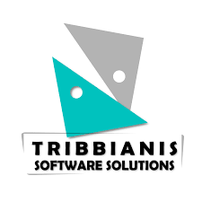
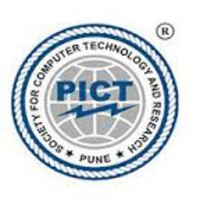
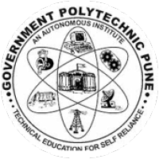

Work Experience
Research Assistant
Kihara Lab @ Purdue University
Aug 2022 – Present, West Lafayette, Indiana, USA
- Deploying deep learning models for analyzing protein structure information from cryo-EM maps using 3D CNNs.
- Building Diffusion based Probabilistic Deep Learning models for generating new protein structures.
Machine Learning Engineer Intern
Snap Inc.
May 2022 – Aug 2022, Los Angeles, California, USA
- Researched and developed an Optical Flow-based solution to get pseudo labels for videos.
- Built a single model that works with all key-point prediction tasks (face tracking, hand tracking, etc.).
- Enhanced the algorithm using self ensemble techniques to generate jitter-free (smooth motion) labels.
- Novel fine-tuning resulted in 2x accuracy and 15% faster labeling.
- Deployed the solution in Snap’s internal (web app) using GCP-based Kubernetes backend and TF JS.
Graduate Data Science Researcher
Viasat (The Data Mine)
Aug 2021 – May 2022, West Lafayette, Indiana, USA
- Investigated and researched various techniques for Image and Video Super-Resolution (SR).
- Carried out experiments to compare various recent and past prominent works in Blind Image SR.
- Thoroughly studied and prepared a detailed literature survey of various seminal works in Blind Image SR.
Machine Learning Intern
Pirimid Fintech
Nov 2020 – Mar 2021, Ahmedabad, Gujarat, India
- Built robust Credit Scoring System using AI called Early Warning System (EWS) for banks.
- EWS predicts various kinds of risk signals associated with a Loan throughout its life cycle.
- EWS is trained on financial, news, social media, economic, industrial, historical, etc data.
- Developed NLP based system (POC) that predicts company insolvency with an accuracy of 30 days.

Research and Development Intern
OrbitShifters
Jun 2020 – Aug 2020, Pune, Maharashtra, India
- (www.sportsvision.ai) Computer Vision-based Sports Analysis for combat sports like boxing.
- Built models for Pose tracking and Fine-grained Action recognition in boxing match videos.
- Trained models on the USA Olympics boxing match video dataset and deployed the system.
Research Assistant (Dr. R. B. Ingle)
VEM Tooling Group
Jul 2019 – May 2020, Pune, Maharashtra, India
- Used Computer Vision-based techniques to extract 3D dimensions of objects.
- Designed and developed a working prototype system.
- Carried out the research that involved exploring and implementing various approaches.
- Also developed a solution to reconstruct a 3D model from the given 2D images of an object.
Deep Learning Intern
AP Analytica
Oct 2019 – Jan 2020, Pune, Maharashtra, India
- Built an Automatic Image-based Invoice Parsing System.
- Used deep learning-based techniques to extract information from images of invoices.
- Developed text recognition algorithms to extract various invoice fields from the invoice image.
- Developed deep learning-based robust table detection and recognition algorithm.

Machine Learning Intern
Tribbinanis Software Solutions
Jun 2019 – Aug 2019, Ahmedabad, Gujarat, India
- Real-time face recognition-based automatic attendance system.
- Automatic License plate detection and recognition system
- Benchmarked and tested various deep learning-based techniques.
Software Intern
Kneo Automation
Apr 2017 – Aug 2018, Pune Area, India
- Designed Image processing and ML/DL-based solutions for the manufacturing industry.
- Contributed to IoT, Full-stack development, and hybrid mobile application projects.
- Designed web-based frontends for applications.
Education
Purdue University
Master of Science in Computer Science
2021 – 2023, West Lafayette, Indiana, USA
GPA - 3.43/4.0
- Worked on as a Graduate Data Science Reseacher for Viasat (The Data Mine).
- Worked on as a Research Assistant under Prof. Daisuke Kihara

Pune Institute of Computer Technology
Bachelor of Engineering in Information Technology
2018 – 2021, Pune, Maharashhtra, India
CGPA - 9.6/10.0
- Published 2 international research papers
- 2 Times Smart India Hackathon Finalist
- Presented ideas at Google DevFest and Startup and Innovation cell
- Served as Technical Head at PICT CSI Student Branch
- College Football Team (Reliance Cup)

Government Polytechnic Pune
Diploma in Computer Engineering
2015 – 2018, Pune, Maharashhtra, India
Percentage - 90.5/100.0
- Smart India Hackathon Finalist
- College badminton team (State level winner)
- College Football team (Zone Runner Up)
- Department Basketball team (Inter dept Runner Up)
Achievements
Winner D. K. Bhave Scholarship worth USD 6700, by Savitribai Phule Pune University 2021
Finalist Smart India Hackathon 2020, 2019 and 2018 (India’s Biggest Hackathon)
Winner PICT Internal hackathon for SIH 2020
Winner Kaggle in-class competition, Credenz Datawiz 2019 at PICT
Runner Up Paper presentation competition, INC (Pratibha) 2019 at PICT
Runner Up Social Hackathon, Pasckathon 2019 at PICT
Winner Web App development competition, Pulzion 2018 at PICT
Top 2 from PICT in SPPU's cluster level i-2-e startup and innovation competition 2019